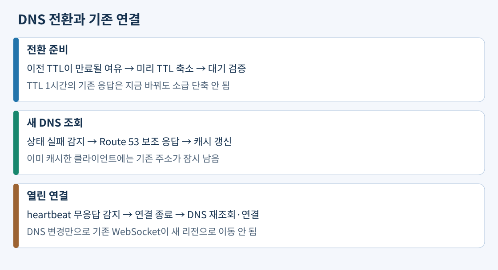
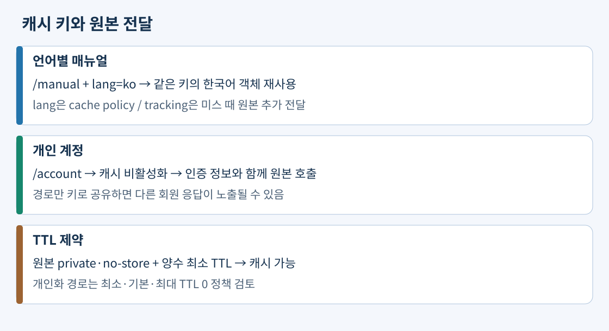

Route 53은 DNS 질문에 접속 대상을 응답한다. 실제 HTTP·TCP 흐름은 그 뒤 클라이언트와 대상 사이에서 진행한다. Simple은 단순 응답, Weighted는 DNS 응답의 상대 비중, Latency는 관측한 네트워크 지연, Geolocation은 사용자 국가·대륙 규칙, Geoproximity는 지리적 위치와 bias, Failover는 주·보조 상태, Multivalue는 최대 여덟 정상 주소 응답을 다룬다. IP-based 정책은 지정한 클라이언트 CIDR에 따라 대상을 선택한다. 위치와 지연, DNS 비율과 실제 요청 비율을 혼동하지 않는다.
실제 구성 예: 서울·유럽이 모두 정상이고 국가 고정보다 지연이 중요하면 Latency 레코드를 사용한다. 주 리전만 쓰다가 준비된 대기 리전으로 바꿀 때는 Failover와 상태 확인을 사용한다. DNS가 DB와 앱을 생성해 주지는 않으므로 대기 환경과 데이터 복구가 먼저 준비돼야 한다. 두 대상 모두 비정상이면 정책이 fail-open 방식으로 응답할 수 있으므로 Failover가 항상 정상 서버만 반환한다는 전제를 두지 않는다.
출처: 정책 목록, Latency, Failover, Multivalue
TTL은 응답을 캐시하는 기간이다. TTL 1시간으로 받은 옛 응답은 지금 TTL을 1분으로 낮춰도 소급해서 바뀌지 않는다. 계획 전환이라면 기존 TTL이 만료될 시간을 두고 미리 낮춘다. 이미 열린 WebSocket은 DNS 변경으로 이사하지 않으므로 heartbeat·무응답 감지·재연결과 DNS 재조회를 구현한다. 실제 구성 예: 전날 TTL을 90초로 줄이고 40초 무응답 시 재연결하게 한 뒤 새 리전의 쓰기까지 확인한다. TTL 준수와 재조회 여부를 검증하며 모든 클라이언트의 복구가 이 수치만으로 보장된다고 단정하지 않는다. 낮은 TTL은 DNS 조회량·비용을 늘릴 수 있다.

출처: TTL 값, DNS failover
상태 확인은 사용자가 필요한 기능을 대변해야 한다. HTTP /health가 DB SELECT만 확인하면 DB가 read-only일 때도 200을 줄 수 있다. 주문 쓰기 장애를 판단하려면 앱의 쓰기 가능한지 검증하는 경로나 VPC 내부 합성 검사를 사용한다. 테스트용 짧은 트랜잭션을 실행·정리하고 실패를 지표로 보내는 등의 방식으로 실제 쓰기 경로를 점검하며 업무 데이터 오염을 피한다.
Route 53 공개 health checker는 VPC 외부에 있어 private IP의 DB에 직접 접속할 수 없다. 내부 검사→CloudWatch 사용자 지표→알람→알람 데이터 스트림 기반 Route 53 health check→Failover 레코드로 연결할 수 있다. 알람의 결측 데이터와 검사 주기, 전환 지연도 정의한다. 다른 방식으로 공개 ALB의 앱 상태 경로에서 내부 쓰기 검사 결과를 반영할 수 있다. 이때 공개하는 것은 필요한 상태 응답이고 DB 포트를 공개하는 것이 아니다. ALB Evaluate Target Health만으로 DB 쓰기 의미까지 자동 검사되는 것도 아니다.
출처: private hosted zone 상태 확인, CloudWatch 기반 확인
캐시 키는 같은 객체를 재사용할 요청의 그룹이다. 캐시 정책은 키에 넣는 헤더·쿠키·쿼리와 최소·기본·최대 TTL을 정한다. 키에 포함된 정보는 원본에도 전달된다. Origin request policy는 키에는 넣지 않되 원본에서 필요한 정보를 추가 전달한다. 원본 전달만 켠 값이 캐시 적중에서도 원본으로 전송되는 것은 아니다. 적중 요청은 원본 호출 자체가 없다.
실제 구성 예: /manual?lang=ko&tracking=123은 언어에 따라 응답이 달라지고 tracking은 내용에 영향을 주지 않는다. 캐시 키에 lang을 포함하고 tracking은 제외한다. tracking은 origin request policy로 미스 때만 원본에 전달한다. 모든 조회의 tracking이 필요하면 원본 로그만으로 충분하지 않아 엣지 로그 등 별도 수집이 필요하다. 모든 쿠키를 키에 넣으면 동일 매뉴얼도 여러 사본으로 나뉘어 적중률이 떨어진다.
계정 화면은 다른 사용자의 주소가 같은 경로에서 달라지는 개인화 응답이다. 인증 쿠키만 원본으로 전달하고 키를 경로로 유지하면 A 응답을 캐시한 뒤 B에게 재사용할 수 있다. 초기에는 /account/*의 캐시를 비활성화하고 인증 정보를 전달하며 /images/*는 계속 캐시하는 구성이 단순하다. 캐시를 끈다고 원본의 인증·인가가 없어지는 것은 아니다.

원본의 max-age는 캐시 수명을, s-maxage는 공유 캐시의 수명을 지정한다. no-cache는 재사용 전 검증을 요구하며 no-store는 저장 금지를 의도한다. CloudFront 최소 TTL이 0보다 크면 원본의 private·no-cache·no-store에도 그 최소 시간 동안 캐시할 수 있다. 따라서 개인정보에 private만 추가하고 양수 최소 TTL을 유지하는 것은 안전한 수정이 아니다. 계정 behavior에는 최소·기본·최대 TTL이 모두 0인 캐시 비활성화 정책을 적용하고 필요한 인증 정보를 별도 전달한다.
정적 자산은 /app.v3.js처럼 버전 파일명으로 배포하면 기존 캐시와 새 파일을 분리한다. 같은 이름을 갱신했다면 만료·재검증 또는 invalidation이 필요하다. invalidation은 브라우저가 따로 저장한 사본까지 모두 지우는 명령이 아니며 반복 사용 시 비용도 검토한다.
출처: 만료와 Cache-Control, 관리형 캐시 정책, 무효화
TLS는 접속 상대의 인증서 검증과 전송 암호화를 제공한다. 사용자→CloudFront에는 viewer protocol policy로 HTTPS 리다이렉트 또는 HTTPS only를 정한다. 별칭 도메인이 인증서 SAN에 포함돼야 하고 CloudFront viewer용 ACM 인증서는 us-east-1에서 요청·가져온다. CloudFront→ALB 원본은 별도 HTTPS 연결이며 origin protocol policy도 설정해야 한다. ALB용 인증서는 그 ALB가 있는 리전에 준비한다. 원본 이름 또는 전달하는 Host와 인증서 이름이 맞지 않으면 502 등 오류가 생길 수 있다.
실제 구성 예: learn.example.com을 CloudFront 별칭과 us-east-1 인증서에 등록하고 서울 ALB 원본은 서울 인증서와 HTTPS listener를 사용한다. viewer만 HTTPS로 바꾸고 원본은 HTTP로 두면 전 구간 암호화 요구가 충족되지 않는다. S3 website endpoint는 HTTPS 원본 연결을 지원하지 않는다는 별도 제약도 있다. 일반 서버 TLS와 원본 상호 TLS의 클라이언트 인증서는 다른 설정이다.
출처: 인증서 리전·이름 요구, custom origin HTTPS, website endpoint
CloudFront signed URL은 한 파일 링크, signed cookie는 URL을 바꾸지 않고 여러 경로·영상 조각 접근에 맞는다. 로그인 서버가 구매를 확인하고 만료 정책을 서명한다. CloudFront는 trusted key group의 공개 키로 검증한다. 비공개 키는 발급 서버에서 보호하고 키 교체 시 새 공개 키 배포와 기존 링크 유효 기간을 고려한다. 키·서명값을 URL 로그에 무분별하게 저장하지 않는다. 서명 URL·쿠키는 전달받은 사람이 사용할 수 있는 접근 자격이므로 만료와 필요한 자원 범위를 제한한다.
OAC는 CloudFront→S3 요청의 인증이다. S3 REST 버킷 원본에 OAC를 연결하고 버킷 정책에서 CloudFront 서비스 주체와 해당 distribution SourceArn을 허용한다. 기존 public read 정책·ACL도 제거하고 Block Public Access를 유지해 원본 우회를 막는다. S3 website endpoint는 custom origin이라 OAC를 적용할 수 없으며 REST 원본으로 전환해야 한다. website redirect 기능을 사용 중이면 전환 영향도 확인한다.
SSE-KMS는 S3 읽기 허용 외에 고객 관리형 KMS 키 정책에서 해당 배포의 CloudFront 사용을 허용해야 한다. 공개 객체는 읽히고 KMS 객체만 403이면 이 경계와 객체·버킷 정책을 함께 조사한다. OAC만 있으면 CloudFront 사용자 자체는 공개일 수 있고, 서명만 요구하면서 S3를 공개하면 원본 URL로 우회할 수 있다. 두 권한을 모두 구성한다.
S3 presigned URL은 발급자의 S3 권한으로 특정 작업과 객체를 제한하고 S3가 검증한다. 예를 들어 프로필 사진의 직접 PUT에 쓸 수 있지만 CloudFront 구매자 서명과 다르다. CloudFront만 통한 다운로드가 요구되면 S3 presigned GET이라는 별도 원본 접근 경로를 남기는 구성이 같은 요구를 충족하지 않는다.
출처: OAC·버킷·KMS 정책, 서명 URL, 서명 쿠키, 키 그룹, S3 presigned
Global Accelerator는 정적 Anycast 진입 IP와 TCP·UDP 경로를 제공한다. Standard accelerator는 리전별 endpoint group의 정상 대상을 선택한다. 고객이 두 IP를 허용 목록에 넣은 뒤 리전을 추가해도 accelerator IP를 유지할 수 있다. CloudFront의 HTTP 객체 캐시와 달리 게임 UDP 패킷의 콘텐츠 복사본을 저장하지 않는다. Custom routing은 특정 EC2와 포트로 결정적 매핑을 제공하고 상태에 따른 자동 failover를 제공하지 않으므로 자체 매핑 없이 정상 리전으로 보내려는 요구와 다르다.
S3 Transfer Acceleration은 원거리 클라이언트↔버킷 전송을 AWS 엣지·네트워크로 가속한다. CloudFront는 동일 파일 반복 다운로드의 캐시로 원본 요청을 줄인다. Route 53은 이들의 이름을 주소로 연결한다. 고정 글로벌 IP, 객체 재사용, S3 업로드라는 세 요구를 분리하고 성능·비용을 실제 경로로 비교한다.
출처: Global Accelerator, custom routing, S3 Transfer Acceleration
원본 EC2가 S3 대형 파일을 매번 중계하면 앱 네트워크·실행 자원을 소비한다. CloudFront와 S3 원본으로 직접 전송하고 안전하게 재사용하면 앱 중계를 줄인다. 단, viewer 전송·요청, 원본 요청·전송, 무효화 등 비용을 합산한다. 추적 값 제거는 캐시 키만 최적화하며 응답을 바꾸는 언어·사용자 구분을 지우는 비용 절감은 허용되지 않는다.
캐시는 반복 GET을 줄일 수 있지만 주문 POST 폭주나 DB 쓰기 동시성을 제한하지 않는다. API Gateway throttling, WAF rate rule, 함수 동시성, 큐 등을 각 계층에서 검토한다. 낮은 DNS TTL의 query 증가도 비용 항목이다. 서버 크기만 늘리기 전에 불필요한 원본 호출과 중계를 제거하되 목표 지연·정확성·보안 조건을 유지한다.
출처: CloudFront 가격, 적중률, API throttling
공식 자료 확인일: 2026-11-02